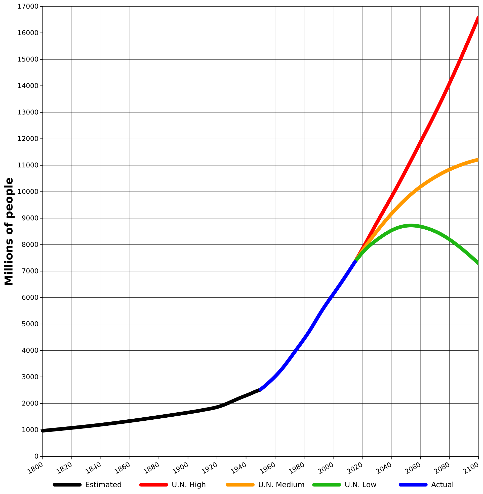
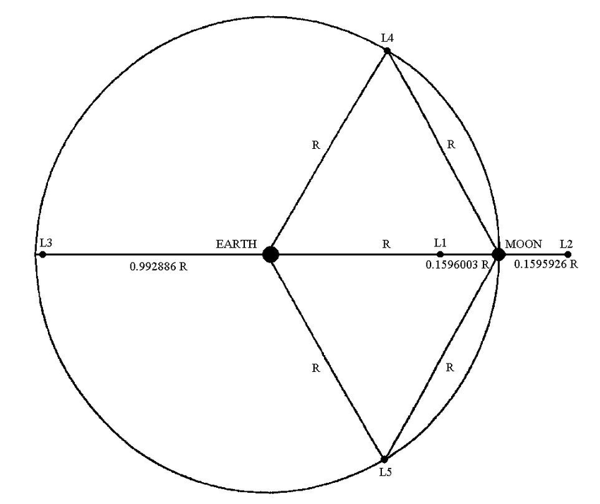
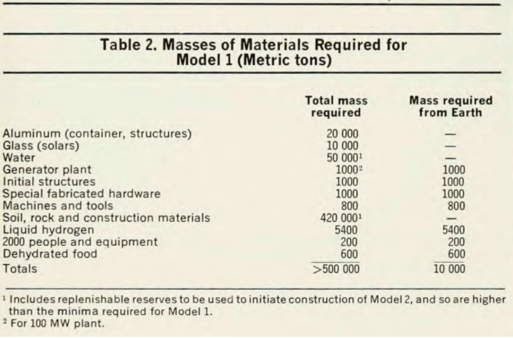

O’Neill Cylinders are huge rotating space habitats capable of supporting up to 20 million people in a single habitat[1]. These behemoths have a radius stretching 3.2km and a length of 32km. Artificial gravity will be provided by spin, the Cylinders will be pressurized to one atmosphere and provide sufficient radiation shielding. These cylinders come in pairs which spin in opposite directions in order to be more stable. An O’Neill cylinder would have 6 sections, 3 “Solar” sections which bounce light in with mirrors and 3 “Valleys'' for human habitation. Originally these structures were supposed to use a more old fashioned form of solar power where parabolic mirrors concentrate light to heat up water which then boils and spins a turbine. This method operating at only 33% efficiency would be more than sufficient[1] in order to power a modern industrialized society. These space habitats will eventually become more suited for human life than Earth itself.
The paper was written in September 1974, a mere 5 years after the moon landing. And less than a year before the space race officially ended with a handshake in space[2]. At the time of writing the Apollo program is still running and the Soviet’s are still landing uncrewed missions on the moon. This was a time when the Earth's population was increasing at a rate that would double the population every 35 years. And at the time overpopulation was a serious issue with no clear solution. In fact, O’Neill states “By about 2050, then[…]emigration to the colonies could reverse the rise of Earth’s population, and that the acceleration of the solution could be dramatically fast[...]Within less than 30 years, Earth’s population could be reduced from a peak of 16.5 billion people to whatever stable value is desired”[1]. This is very different to our present reality where some countries like Japan have only 1.42 births per woman[3] and the population is only expected to reach around 11 billion and then level off.
While the original problem these fantastic space colonies were trying to solve is long gone, the dream still lives on.
Life on O’Neill Cylinders in the later stages of colonization has the potential to be an idyllic paradise. With far greater control over the terrain and biosphere than we have on Earth, cylinders will be constructed in the manner that best suits its inhabitants. These habitats will contain our favorite parts of Earth, the forests, lakes, rivers, mountains, valleys while industry and agriculture would be done in separate habitats. Not only will they have our favorite natural features, but there will also be wonderful never seen before creations. As more people and industry move to space the Earth may eventually become more of a nature preserve and our climate disaster will be averted. By doing industry in separate cylinders we will no longer experience the negative environmental externalities. These cylinders may eventually provide refuge for marginalized groups, who would be able to flee in their mostly self-sufficient space habitats. Furthermore the need for war is much reduced in a world with near infinite living space and cheap solar energy. There will be a wide variety of different styles of cylinders, and transport between them is incredibly simple, fast and comfortable. In space there is no air resistance, a simple pressurized can with all the desired amenities attached to a cable is more than sufficient.
The first cylinder will of course be the hardest, and in his paper O’Neill presents a far more conservative starting point than the massive 32km long theoretically possible habitat. Instead he proposes a cylinder with a 100m radius that is a kilometer long. Which he claims can support up to 10,000 people. He proposes to build said cylinder at L5, the fifth Lagrange point, a point where a “small” object will stay in the same location relative to the earth and the moon.
 [5]There are generally two ways to cut down on costs for building the cylinder, launching for cheaper and gathering materials in space rather than on earth. Materials like aluminum and rocks are readily found on the moon, while glass can easily be manufactured from raw materials collected from the moon. As for the materials collected from earth O’Neill predicted that in the 1980’s there will be reusable chemical rockets that lower the launch cost from “$190 to $400 per pound, in 1972 dollars'' however he picks a more “conservative” $425 per pound or about $2,700 in 2021 dollars[6]. Fast forward to 2020 and assuming getting to L5 is about as hard as getting to GTO, the per pound cost is $1840 when using the falcon heavy and $3390 when using the falcon 9 (non spacex launch providers tend to be much more expensive so they will be ignored). While the Falcon Heavy has had 3 successful launches[7], it is unclear if it can actually be used for the advertised 90 million dollar price. It is disappointing how much the pace of space exploration stalled following the end of the Apollo program, however now with innovation from the private sector we are finally seeing launch costs decrease.
[1]The guiding philosophy of what should be brought from earth is heavy simple things are done in space and complex little things are done on earth. Even with a very robust industry in space it will be a very long time before it is economical to manufacture computer chips in space simply due to their incredible complexity and tiny size. In the early stages materials will be harvested from the moon, material like aluminum is readily available on the moon. We know this due to the chemical composition of rocks collected on the surface of the moon which consist of 60% oxygen, 16-17% silicon, 6-10% aluminum, 4-6% calcium, 3-6% magnesium, 2-5% iron, and 1-2% titanium[8]. The abundance of oxygen in the rocks also provides a supply of oxygen for the atmosphere of the cylinders. While in O’Neill’s time it was still unknown if there was much water on the moon, we now know, “The Moon is really dry. As a comparison, the Sahara Desert has 100 times the amount of water than what the SOFIA mission detected in the lunar soil”[9]. Given this, a modern attempt at creating O’Neill cylinders will likely still go with the originally proposed idea of bringing liquid hydrogen from earth, and then combining it with the oxygen extracted from the moon rocks. This results in a 89% reduction of mass required to be launched from Earth for water[1]. Given the current advances in artificial intelligence and robotics it is likely that creating the first cylinder will take a significantly smaller number of people than the 2000 originally thought to be necessary.
Once a largely self-sufficient foothold is established in space, building the next habitat will be significantly easier. Labour and expertise will be readily available from the already constructed habitats and the infrastructure for constructing the more simple materials will already be in place. Furthermore less specialized tools will need to be launched, as many tools from former construction sites will be reused. The hope is that eventually there will be enough industry on these cylinders to create new ones with minimal assistance from Earth.
In the late stages of space colonization Earth will likely become only significant in our hearts, while most of the human race lives among the stars. Life in space provides several significant advantages to our Earth bound existence which in the long run will expedite the shift over to space.
First of all it provides near infinite living space, given materials from the asteroid belt we have enough space for 78 trillion people. Our population will likely never reach this, and so life in space provides the opportunity for all to have very comfortable and spacious living arrangements. Just as our ancestors didn’t dig more caves, and instead took the rocks to build homes from the mountains. In our future we won’t live on planets, the moon or asteroids, instead we will mine the celestial bodies and construct far more efficient and better habitats.
Transportation is incredibly cheap and easy when one is already outside of a gravity well. For transportation of durable goods, an unpressurized can with some rudimentary engines for acceleration and deceleration is sufficient. And for more sensitive goods in humans pressurization of the can and life support systems will suffice. The spaceships of the future will likely be roomy, comfortable and inexpensive. Since there is no drag in space the trade of will between energy expenditure and time. If we wish to start and end at rest, and assuming half the time is spent under constant acceleration and the other half is spent under constant deceleration. we find the following relationship:
Where ΔX is the distance traveled and t is the travel time. From this formula we can understand that long distance transportation of goods can be done incredibly cheaply at low costs. These costs can be even further reduced by using rail gun like launching mechanisms or even low tech catapult like ones. These provide the benefit of no longer having to carry your own fuel with you (something that was kept out of the previous calculations for simplicity, however this is a big issue if one wishes to get to high speeds).
Finally semi-independent space habitats allow for cultural and governmental experimentation. We will likely see a plethora of government forms among the habitats. However, their independence will likely lead to more and more decentralized forms of governance. This will likely result in thousands of incredibly diverse and independent cultures. This does not mean an end to collaboration, it means a reduction in the enforcement of ideals by one group onto another. Furthermore conflict between space faring nations will likely be over resources rather than the cylinders themselves, which hopefully will lead to a great reduction in civilian casualties.
This shift over to space based habitation will eventually result in what is called a Dyson’s Swarm. A Dyson’s Swarm is when enough space habitats around the sun and capture its energy to sufficiently dim it. The magnitude of such a civilization is incredible, with trillions of people visionaries like Einstein won’t come once every few generations, but once every few months. And with cheap and effective transport all around the solar system, it will truly be an incredible time to be alive.
O’Neil’s Original proposal for colonizing space was created in a time when Earth’s population was doubling every 35 years and many believe mass starvation was around the corner with no clear solution. The harm we were causing to Earth's biosphere was starting to be realized, and there was no clear way to fix it. However in 2021 population collapse seems inevitable in countries like China which used to be driving such incredible growth and renewables and sensible regulation appear to be fully capable of averting a climate disaster, all without causing unreasonable economic damage. Which leaves the question, how could we possibly justify such an expensive program, despite the fact that Earth appears to be perfectly sufficient.
I believe there are generally three reasons to colonize the final frontier, to explore, to hedge our bets and to dream. Exploration is at the core of human psychology, with our distant ancestors crossing frozen straits to discover the Americas and spreading themselves to nearly every corner of our world. Exploration provides meaning to our lives, it gives school children a reason to study and adults a reason to work. The space race electrified our nation and a further round of exploration would be worth it even as an initiative to inspire the next generation of scientists. With the barrier to creating nuclear and biological weapons constantly falling as technology progresses, having all of the human race in one place will very likely end in disaster. By hedging our bets and having many self sufficient human colonies we greatly increase humanities chances of survival. And finally, the colonization of the final frontier allows us to dream of a future where every single person lives in an idyllic environment with beautiful weather, plentiful food and countless opportunities.
As our launch prices plummet, and America’s interest in space is reigniting we stand at a time which may just mark the dawn of a second space age, one where we finally establish a permanent foothold in space.
{kind=link}
{kind=link}